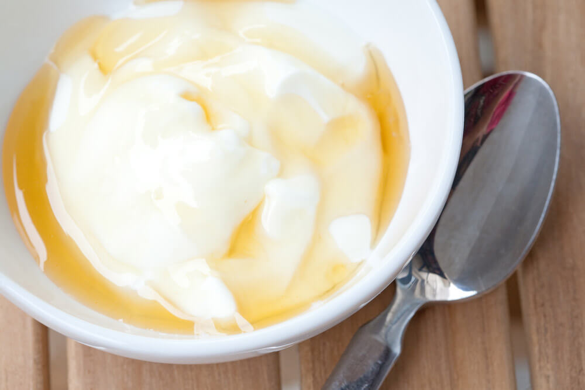

Greek yoghurt
Ingredients:
- 1 cup of greek yoghurt
- 1 tablespoon honey
- 1/2 cup mixed berries(such as blueberries, raspberries and sliced stawberries)
Steps:
- In a small bowl, stir together the Greek yogurt and honey until well combined.
- Rinse and pat dry the mixed berries.
- Top the Greek yogurt with the mixed berries.
- Enjoy!